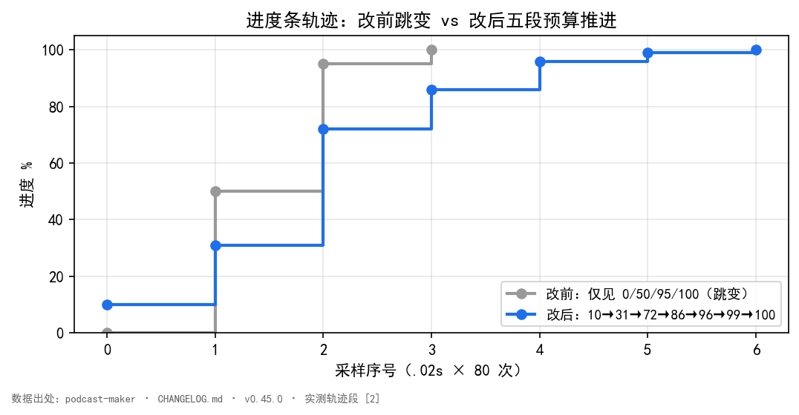

某次长活跑批，用户在脚本生成页按下「生成脚本」，然后去倒了杯水。回来时进度条还停在 0%；再一眨眼，直接跳到 100%，成品已经躺在产物区。
那趟任务实跑二十分钟到半小时——本地模型写稿本就慢。可界面上能看见的，只有「没动」和「好了」两个状态。中间发生了什么，进度条一个字都说不出。
这不是偶发卡顿。换任何一期、任何长度，轨迹都长一样：开头死寂，结尾瞬跳。
把前端轮询记录拉出来看，实测轨迹只有四跳：
改前： 0% ····································· 100%
更精确地说，CHANGELOG 记录的真实采样是0% → 50% → 95% → 100%四跳，而且全部挤在任务最后几十秒[1]。
问题出在轮询粒度。前端每 1.5 秒问一次进度。50% 与 95% 这两跳往往发生在几百毫秒内——一次轮询都未必能抓到，下一只看到 100%。于是用户视角里，进度条等于只有 0% 和 100% 两个可见态。
对比改后的轨迹，主体是能看见刻度的：
改后： 10% → 31% → 72% → 86% → 96% → 99% → 100%
分段路（一期六段写作）的完整轨迹更细：1% → 4.5% → … → 72.0% → 86.0% → … → 99.0%，前进 17 次、倒回 0 次 [2]。真实运行时每一格之间隔着几分钟，肉眼看得清清楚楚。
绕弯有两条路，都试过、都错。
第一条：用非里程碑行稀释刻度。 直觉是「进度条不动是因为我推得不够勤」，于是把「目标：1500 秒 / 约 6024 字」这类行也拿来推一把。结果刻度被稀释成噪声——一句话推一格，进度的物理意义没了，反倒让人误以为快好[3]。这是把显示当成了需要填充的条，而不是预算的真实投影。
第二条：测试只覆盖了错的那半边。 旧版tests/test_batch.py::test_stage_and_progress_follow_the_round只验了「检查段、门禁段按轮前进」[4]。写稿段该不该动进度，一个断言都没有。于是折算规则漏掉一整段，测试照样全绿——测的是已经对的半边，漏的是从来没接上的半边。这条错路最危险：它让 bug 在持续集成里隐身。
根因是两层叠加，不是一处笔误。
第一层：写稿段根本没有预算。 _script_stage的折算规则只认「检查第 N 轮」「门禁第 N 轮」，它们分掉全部 100%（检查 0~50%、门禁 50~100%）。写稿段那两行——分段路的「段 k/N 完成」、整篇路的「生成第 N 次」——被一条分支整个吞掉，没有人认这个前缀，一行都不折[1]。而写稿恰恰是本地模型跑十几分钟到半小时的那一段，最该有刻度。
第二层：收尾两段挤在同一毫秒。 形式门禁是纯代码判定、不调模型，「检查通过 → 门禁通过 → 收尾」瞬时连发，进度条上那两跳被压缩到几毫秒里，注定看不[1]。
两层叠起来：该有刻度的中段没有，仅有的两跳又挤在结尾瞬间。于是「永远 0% 和 100%」。
修复口径收得很窄：script_engine一行未动，日志行一字未改——界面按既有段名折算这件事本来就这样设计，缺的只是表没写[6]。
值域用[起, 止)且首尾相接——进了下一段就天然比上一段任何一格都[5]。把刻度集中成表而非散在分支里，是为了让「哪一段有刻度、哪一段没有」一眼可见：从前散着写，漏掉一整段也看不出来。真实实现是字典而非列表（podcast_maker/web_ui.py:488）：
_BANDS = {
"准备": (0.00, 0.10), # 取料 → 判据包 → 逐节原文 → 逻辑拆分 → 装箱 → 规划
"写稿": (0.10, 0.72), # 分段路按「段 k/N 完成」；整篇路按「输出坏了重发」的轮
"检查": (0.72, 0.86), # 内容检，按轮
"门禁": (0.86, 0.96), # 形式门禁，按轮
"收尾": (0.96, 0.99), # 粘片头尾 → 落盘；最后 1% 归 run_async 的收口
}五段划分与_BANDS一一对应：
| 段 | 区间 | 刻度来源 |
|---|---|---|
| 准备 | 0.00 ~ 0.10 | 逻辑拆分 / 装箱 / 规划，一行一格 |
| 写稿 | 0.10 ~ 0.72 | 分段路「段 k/N 完成」；整篇路「输出坏了重发」的轮 |
| 检查 | 0.72 ~ 0.86 | 「检查第 N 轮」，按轮 |
| 门禁 | 0.86 ~ 0.96 | 「门禁第 N 轮」，按轮 |
| 收尾 | 0.96 ~ 0.99 | 粘回顾 / 粘片头尾 |
_put闭包把一格推到[lo, hi)里的位置，再用max兜底——任何一次推进都只可能 ≥ 当前进度，绝不会因某段折算算错而倒回（podcast_maker/web_ui.py:541）：
def _put(band, ratio):
"""推到 band 段里的第 ratio 格（0~1）。只前进不后退。"""
lo, hi = _BANDS[band]
r = min(1.0, max(0.0, float(ratio)))
job["progress"] = max(job.get("progress", 0.0), lo + (hi - lo) * r)
单调性因此不靠「[起,止) 首尾相接」的约定去祈祷，而是写死在每一行赋值里：max保证前进方向不可逆。
进度不是界面自己猜的，而是主体把段名写进每一行日志——「段 k/N 完成」「检查第 N 轮」「门禁第 N 轮」——_script_stage用一组正则去认这些前缀，再映射到_BANDS的对应段（podcast_maker/web_ui.py:497、:523）：
_ROUND_LOG = re.compile(r"^(门禁|检查)第\s*(\d+)\s*轮")
# 写稿段的两条路各认自己的计数：整篇路「生成第 N 次」，分段路「段 k/N」。
_GEN_CALL = re.compile(r"^生成第\s*(\d+)\s*次：调用模型")
_GEN_DONE = re.compile(r"^生成第\s*(\d+)\s*次：模型返回正文")
_SEG_CALL = re.compile(r"^段\s*(\d+)/(\d+)\s*[：:]")
_SEG_DONE = re.compile(r"^段\s*(\d+)/(\d+)\s*完成")
这套「日志行自带段名 → 正则认段名 → 查_BANDS」的流程，是统一推动点位在进度模块里最小的一个实例：刻度从哪来、按什么规则推进，全部收在一处正则表 + 一张区间表，不散到写稿/检查/门禁各段里各写一遍。改一处（比如调区间或加一段）只动_BANDS，正则会继续认段名——这正是本书 #38《工程如何落地》要展开的三支柱之一在进度条上的落点（本篇不引母书，只埋线）。
写稿段「段 k/N 完成」的折算尤其典型：N 就写在日志行里，这一路天然知道总数，按k/N折（podcast_maker/web_ui.py:569）：
m = _SEG_DONE.match(msg)
if m:
# 全篇有几个写作段，这一路天然知道（N 就写在行里）。
job["stage"] = msg
_put("写稿", int(m.group(1)) / float(max(1, int(m.group(2)))))
return
单测tests/test_batch.py用真实日志行驱动_script_stage，逐段断言进度。把其中一期六段写作的真实日志样本抽出来，就是进度条实际吃的那套「段名 → 刻度」：
| 日志行（真实样本） | 命中正则 | 进度动作 |
|---|---|---|
| 分段 · 第1步 逻辑拆分：依据本期主旨与 9 节凝缩… | 准备段里程碑 | 准备段推一格（>0） |
| 段 1/6：调用模型…（配额 1004 有效字） | _SEG_CALL | 摆到写稿段起点，不推格 |
| 段 1/6 完成：41 句 / 1008 有效字（累计 1008/6024） | _SEG_DONE | 写稿段推1/6格 |
| 检查第 1 轮：判定完成（通过） | _ROUND_LOG | 检查段按轮推格 |
| 门禁第 1 轮：模型返回正文 6010 有效字 | _ROUND_LOG | 门禁段推格 |
| 门禁第 1 轮：定点修补 2 句… | _ROUND_LOG（同轮） | 进度不变（只许前进） |
| 前期回顾已粘上：3 句，位置是第 2 句 | 收尾段 | 收尾段推一格 |
| 片头尾已粘上：正文 240 句，首 5 句、尾 1 句固定结构 | 收尾段 | 推到0.99、留 1% 给落盘 |
单测对每一行都断言了方向：assertGreater（一段写完推一格）、assertEqual（同轮修补不倒回）、assertAlmostEqual(job["progress"], _BANDS["收尾"][1])且assertLess(…, 1.0)（留一格给落盘与任务收口）——这些断言把「前进不倒回」「末段不占满」钉成了硬契[4]。
只在里程碑行推进度。 不是里程碑的行不动进度、也不改阶段。让无关行推一把等于把刻度稀释成噪声（见第三节第一条错路）。
不画假进度。 一轮跑多久本来没人知道，匀速前进的假条只会让人以为快好了。「调用模型…」那几行只把进度摆到本格起点并更新阶段——用途是让界面在漫长一轮里说得出在干什么，而不是停在上一句话[3]。
四组证据，测量条件一并给出。
轨迹对比（假模型走真实任务通路，.02秒采样 80 次）[2]：改前0% … 100%，改后10% → 31% → 72% → 86% → 96% → 99% → 100%。

图 1：进度条轨迹前后对比。数据[2]（podcast-maker · CHANGELOG.md · v0.45.0 · 实测轨迹段）。改前仅见 0/50/95/100 四个跳变点；改后五段预算把它摊成 10/31/72/86/96/99/100，采样序列全程单调推进。
目的：在真实任务通路上测出改前/改后的进度轨迹，排除真实模型耗时抖动对采样的干扰。
输入：假模型（不调真实 LLM，按固定节奏吐字），走与真实生成完全相同的script_engine通路。
步骤：.02秒采样、共 80 次，记录每次轮询拿到的进度[2]。
观测：改前轨迹仅0% … 100%（0/50/95/100 四跳挤在末段）；改后轨迹10% → 31% → 72% → 86% → 96% → 99% → 100%。
判定：改后全程单调、可见刻度即 PASS；图 1 即该测量的可视化。
分段路完整轨迹（一期六段写作，成稿规划）[2]：17 次前进、0 次倒回。真实运行每格间隔几分钟，肉眼可见。
单测（全量python -m unittest discover）[4][7]：旧版test_stage_and_progress_follow_the_round改为五段逐段验，加三条硬口径——段与段首尾相接、写稿段占一半以上（0.10~0.72，即 62%）、末段不占满 1.0；新增test_progress_bands_are_contiguous_and_the_writing_band_has_room、test_whole_draft_path_ticks_on_the_rewrite_round。全量单测 1240 → 1242 OK。
对账探针（只读，未改项目文件）[8]：穷举web_ui._script_stage里 89 处日志格式串，逐行问折算规则——97 行会推进度、全部落在五段之内，171 行不动；复核对账用_script_stage直接穷举（两路真实日志行 → 轨迹，真实代码见podcast_maker/web_ui.py:_script_stage）。
进度条不是显示组件，是预算表的可视化；预算表漏一段，界面就永远看不到那一段。先有完整、首尾相接的账本（_BANDS），才有看得见的进度。
| 编号 | 引用 | 出处 |
|---|---|---|
| [1] | 进度条从没接上写稿段；两层根因（写稿段无预算、收尾两段挤同一毫秒）；轨迹0%→50%→95%→100% | podcast-maker · CHANGELOG.md · v0.45.0 · 条目「修复：脚本页「生成脚本」的进度条从来没接上写稿段」 podcast_maker/web_ui.py:_script_stage折算规则（项目实证） |
| [2] | 改后轨迹10%→31%→72%→86%→96%→99%→100%；分段路 17 进 0 退 | podcast-maker · CHANGELOG.md · v0.45.0 · 实测轨迹段 （项目实证：假模型走真实任务通路 .02s 采样 80 次） |
| [3] | 非里程碑行稀释刻度；不画假进度 | podcast-maker · CHANGELOG.md · v0.45.0 · 修复段「只在里程碑行推进度 / 不画假进度」 |
| [4] | 旧测试只验检查/门禁段；新版五段逐段验 + 三条硬口径；单测逐行断言方向 | podcast-maker · CHANGELOG.md · v0.45.0 · 测试段 tests/test_batch.py::test_stage_and_progress_follow_the_round |
| [5] | _BANDS字典五段表[起,止)首尾相接；_put闭包max兜底只前进不后退；轮次表一份实现_segment_parse_rounds | podcast-maker · CHANGELOG.md · v0.45.0 · 修复段「把预算表重做成五段」 podcast_maker/web_ui.py:_BANDS（:488）/ _put（:541）；script_engine._segment_parse_rounds |
| [6] | 只改进度口径，不动生成行为 | podcast-maker · CHANGELOG.md · v0.45.0 · 说明段 |
| [7] | 全量单测 1240→1242 OK | podcast-maker · CHANGELOG.md · v0.45.0 · 测试段末行 |
| [8] | 穷举web_ui._script_stage 89 处日志格式串：97 行推进度全落五段内、171 行不动 | podcast-maker · CHANGELOG.md · v0.45.0 · 说明段（89 处日志格式串对账） podcast_maker/web_ui.py:_script_stage（逐行问折算规则） |
◦同书其他篇：#2《字幕四份同源》讲同源律（多份产物由同一源一次生成）；本篇的_BANDS是「账本」维度的同源——进度只从一张表派生，不各写一个数。
最后更新：2026-10-08（已补丰富化：_BANDS 伪代码 + 轨迹测量实验设计；四检：真实性 PASS / 底层逻辑 PASS / 空推论 PASS / 循环论证 PASS）